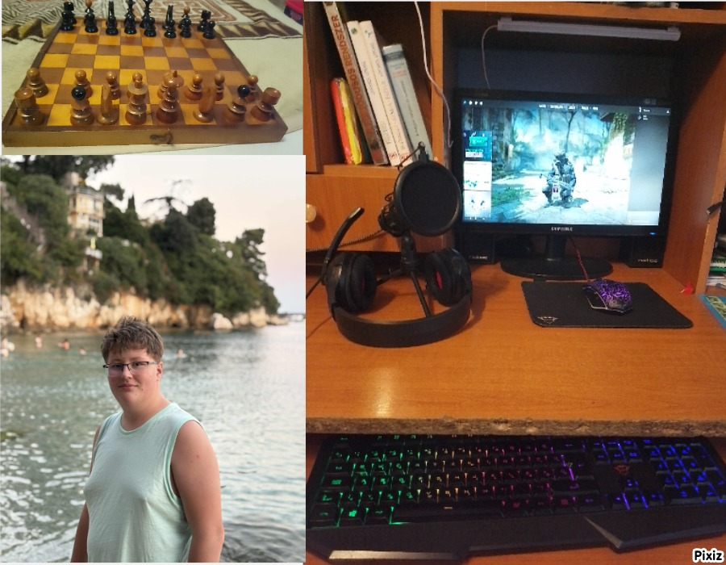

Keresztesi Kristóf vagyok. Hernádkakban élek. 2011.05.11. születem Miskolcon. 14 éves vagyok. Szüleimel élek. Szabad időmben játszok a gépemen
Mszc Kandó Kálmán Informatikai technukum ban tatulók most járom első évemet 9.c-s ként. Azért járok ide mert Rendszergazda akarok lenni. A tervem hogy unokatestvéremel egy saját cégben dolgozok vele, mert unokatestvérem a Budapesti egyetemre jár. 